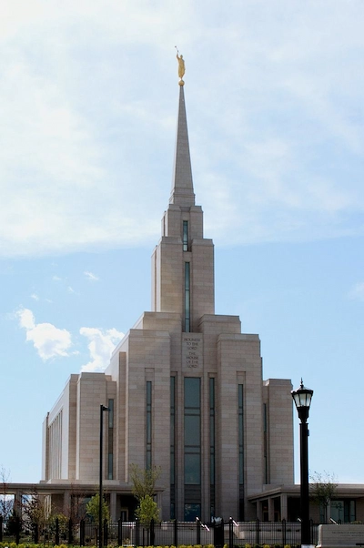

I love Herriman, Utah because of the many childhood memories I have there, the many times I went to my Aunt and Uncle's house, and the fun I had there. I also love the mountains that I can see off in the distance, the entirety of Utah is surrounded by mountains that look amazing and helps put things into perspective.
I also love the snow that blankets the ground during the winter, I came from Florida so I don't often see snow. Seeing it though is always so nice, I love snowball fights, seeing mountains lying blanketed in snow, and making snow angels.
This is the Oquirrh Mountain Temple, which is the closest temple to where I stayed in Herriman.